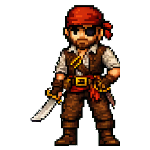
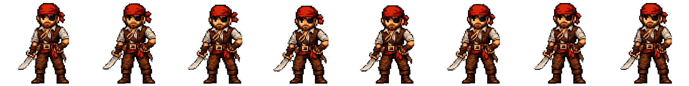
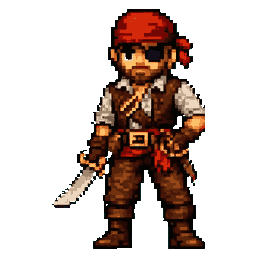
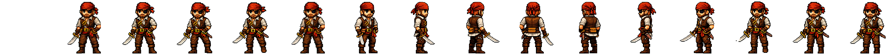
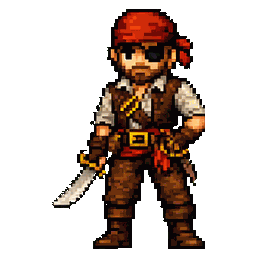
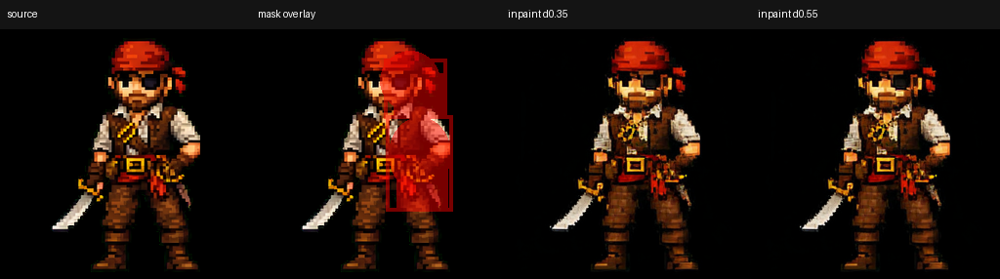
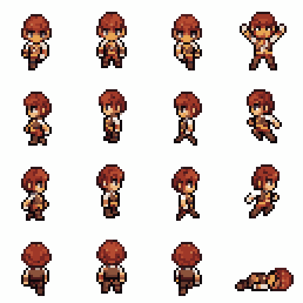
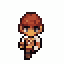
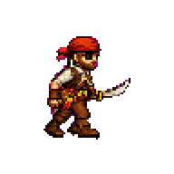
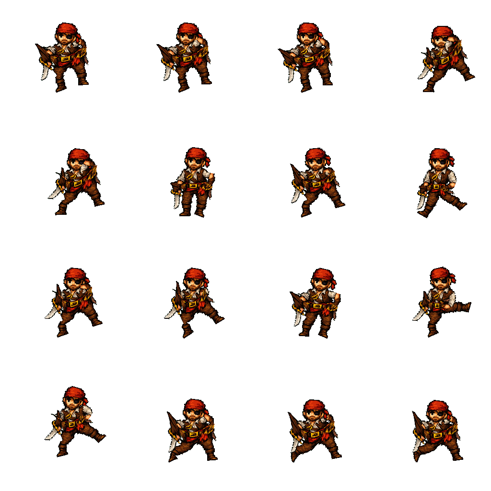

Сначала — простыми словами
Что такое игровые ассеты?
Игровые ассеты — это готовые материалы, из которых собирается игра: персонажи, предметы, окружение, интерфейс, звуки и анимации.
В этой задаче речь идёт именно о графических ассетах для 2D-игры в стиле pixel art: небольших изображениях, нарисованных видимыми отдельными пикселями.
Картинка персонажа
Показывает, как герой выглядит. Но сама по себе она не умеет ходить, атаковать или поворачиваться.
Кадры движения
Художник или программа рисует несколько последовательных поз одного и того же персонажа.
Анимация в игре
Игра быстро показывает кадры по очереди — и статичный герой начинает двигаться.
Наглядный пример
Одна картинка превращается в анимацию
Ниже — один и тот же пират: исходная картинка, таблица кадров и готовое движение.
Исходник

Один статичный персонаж.
Спрайт-таблица

Восемь последовательных кадров собраны в один файл.
Готовая анимация

Кадры проигрываются по кругу — пират «дышит» и слегка двигается.
Другой тип игрового ассета
Персонажу нужны не только движения, но и разные стороны
В игре герой может смотреть вперёд, вбок или назад. Эти ракурсы тоже нужно нарисовать, сохранив одного и того же персонажа.
Спрайт-таблица поворота

В одном файле лежат разные стороны персонажа.
Просмотр результата

При последовательном просмотре видно, как персонаж поворачивается.
Масштаб задачи
Игровой персонаж должен уметь очень многое
Одной анимации недостаточно. Для каждого действия нужна своя последовательность кадров — обычно отдельная спрайт-таблица.
Движение
Стоять, ходить, бегать, прыгать, падать, поворачиваться и останавливаться.
Действия
Атаковать, стрелять, использовать предметы, получать удар и взаимодействовать с миром.
Состояния
Дышать в ожидании, получать урон, оглушаться, умирать и возвращаться в исходную позу.
Для всех этих действий персонаж должен оставаться узнаваемым: с тем же лицом, одеждой, оружием, пропорциями и стилем. Именно поэтому задача не сводится к генерации нескольких похожих картинок.
Задача, которую я ставлю перед собой
Научиться делать такие 2D pixel-art спрайт-таблицы максимально локально
Желаемый процесс
- Загрузить одну утверждённую картинку персонажа.
- Получить нужные ракурсы и анимации разных действий.
- Запускать основную часть процесса на своём компьютере.
- Контролировать файлы, качество и повторяемость результата.
Почему недостаточно готового сервиса
Можно оплачивать Sprite Fusion или PixelLab и отправлять туда каждый новый персонаж. Но тогда весь ключевой этап остаётся внутри закрытого платного продукта.
Эти сервисы полезны как ориентир качества. Моя цель — понять, можно ли воспроизвести похожий процесс локально или почти локально.
«Максимально локально» не обязательно означает полный отказ от любых облачных инструментов. Главное — не зависеть целиком от одного закрытого генератора и уметь управлять собственным процессом.
Что я хочу получить от этого разговора
Свежий технический взгляд, а не подтверждение уже выбранного решения
У меня есть надежда, что благодаря твоим фундаментальным знаниям и опыту в разработке ты сможешь увидеть решение там, где я его пока не вижу.
Главная надежда
Возможно, я пошёл по слишком узкому или вообще неверному пути. Особенно ценным будет взгляд, который предложит совсем другое разбиение задачи или другой класс технологий.
Что мне было бы полезно понять
- Как разумно разделить задачу на этапы?
- Где действительно нужен ML, а где достаточно обычного кода?
- Какие open-source решения или подходы стоит проверить?
- Какой маленький прототип быстро покажет, реалистична ли идея?
Что уже было испробовано
Две локальные нейросетевые сборки — и обе пока не решают задачу
Я пробовал не одну «голую» модель, а сборки в ComfyUI с дополнительными инструментами для стиля, сохранения персонажа, управления позой и очистки результата.
Сборка на SDXL
SDXL Base + Pixel-Art-XL LoRA + IP-Adapter + ControlNet / inpaint

Надстройки помогают удерживать стиль и часть деталей, но не решают главное. При слабом воздействии персонаж почти не двигается; при сильном — меняются лицо, одежда и анатомия. Локальный inpaint тоже перерисовывает детали, но не создаёт контролируемого движения.
- Сила генерации работает как плохой компромисс: либо почти нет движения, либо теряется исходный персонаж.
- IP-Adapter лучше удерживает общий образ, но не обеспечивает одинаковые детали во всех кадрах.
- ControlNet удерживает контур или позу, но добавляет шум и не понимает логику самой анимации.
- Каждый кадр фактически генерируется отдельно, поэтому между ними нет надёжной временной связности.
Сборка на Flux
Flux2 Klein Image Edit + reference conditioning + Pixel Snapper


Отдельные позы выглядят аккуратно, а Pixel Snapper делает пиксельную сетку чище. Но это всё ещё набор разных картинок: меняются масштаб, ракурс и детали, а кадры не складываются в одно связное действие.
- Reference conditioning сохраняет общий тип героя, но не гарантирует точное совпадение лица, одежды и пропорций.
- Модель смешивает в одной таблице разные направления и действия вместо одного заданного цикла.
- Размер, положение и детали персонажа плавают от ячейки к ячейке.
- Pixel Snapper исправляет пиксельную сетку, но не может исправить смысловые ошибки и несвязность кадров.
Другие проверенные подходы
Покомпонентная генерация кадров

Если говорить прямо: результат — говно. Персонаж дёргается и деформируется, а последовательность поз не превращается в нормальную ходьбу.
Риг и деформация

Риг сохраняет исходного персонажа, но двигает его как плоскую куклу. Тело и одежда деформируются механически, без естественной перерисовки.
Промежуточный вывод: локально уже получается запускать модели, управлять сборкой, очищать изображения, разрезать таблицы и проверять результат. Нерешённой остаётся ключевая часть — получать согласованные позы и промежуточные кадры, которые сохраняют персонажа и образуют настоящее движение.